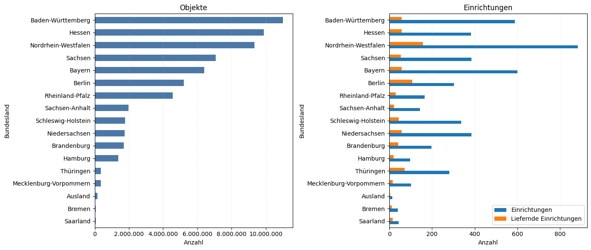

Quelltext anzeigen
import requests
import pandas as pd
import matplotlib.pyplot as plt
from matplotlib.ticker import FuncFormatter
from datetime import datetime
from IPython.display import Markdown, displayDieses Notebook ruft Statistiken aus der API der Deutschen Digitalen Bibliothek ab und bereitet sie für eine Auswertung nach Bundesland auf:
dataprovider_id geladen (Objektanzahlen je Datenpartner).df_join zusammengeführt (und kann als Excel exportiert werden).agg) und als Diagramme visualisiert.# Zuerst wird aus der DDB-Suche eine Facet-Statistik zu `dataprovider_id` geladen.
# Ergebnis dieser Zelle ist `df` mit zwei Spalten (`dataprovider_id`, `count`).
# Zusätzlich wird auf 32-stellige Provider-IDs gefiltert, damit im DataFrame nur echte Provider-IDs stehen.
# API-Call: https://api.deutsche-digitale-bibliothek.de/2/search/index/search/select?q=*%3A*&rows=0&facet=true&facet.field=dataprovider_id&facet.limit=-1&facet.sort=count&wt=json
url = "https://api.deutsche-digitale-bibliothek.de/2/search/index/search/select"
params = {
"q": "*:*",
"rows": 0,
"facet": "true",
"facet.field": "dataprovider_id",
"facet.limit": -1,
"facet.sort": "count",
"wt": "json",
}
resp = requests.get(url, params=params, timeout=300)
resp.raise_for_status()
data = resp.json()
facet_list = data["facet_counts"]["facet_fields"]["dataprovider_id"] # ["id1", count1, "id2", count2, ...]
pairs = list(zip(facet_list[0::2], facet_list[1::2]))
df = pd.DataFrame(pairs, columns=["dataprovider_id", "count"])
df["dataprovider_id"] = df["dataprovider_id"].astype(str)
df["count"] = pd.to_numeric(df["count"], errors="coerce").fillna(0).astype("int64")
df = df[df["dataprovider_id"].str.len() == 32].reset_index(drop=True)
# df# Als nächstes werden Organisationsdaten (Einrichtungen und Aggregatoren) aus dem Organisation-Index geladen.
# Felder, die mal als Liste und mal als Einzelwert kommen, werden vereinheitlicht.
# Ergebnis ist `df_org` mit Metadaten wie `label`, `type`, `sector_fct`, `city_de_fct` und `state_de_fct`.
#
# API-Call: https://api.deutsche-digitale-bibliothek.de/2/search/index/organization/select?q=type:ddb-institution%20OR%20type:ddb-aggregator&fl=id,label,type,sector_fct,city_de_fct,state_de_fct&rows=10000&wt=json
url_org = "https://api.deutsche-digitale-bibliothek.de/2/search/index/organization/select"
params_org = {
"q": "type:ddb-institution OR type:ddb-aggregator",
"fl": "id,label,type,sector_fct,city_de_fct,state_de_fct",
"rows": 10000,
"wt": "json",
}
resp_org = requests.get(url_org, params=params_org, timeout=300)
resp_org.raise_for_status()
data_org = resp_org.json()
docs = data_org.get("response", {}).get("docs", [])
def _as_list(value):
if value is None:
return []
# Solr liefert bei *_fct i.d.R. Listen; zur Sicherheit wird auch ein Scalar zu einer Liste normalisiert
return value if isinstance(value, list) else [value]
df_org = pd.DataFrame({
"id": [d.get("id") for d in docs],
"label": [_as_list(d.get("label")) for d in docs],
"type": [d.get("type") for d in docs],
"sector_fct": [d.get("sector_fct") for d in docs],
"city_de_fct": [_as_list(d.get("city_de_fct")) for d in docs],
"state_de_fct": [_as_list(d.get("state_de_fct")) for d in docs],
})
# df_org# Anschließend werden die Provider-Statistik (`df`) und die Organisationsdaten (`df_org`) zusammengeführt.
# Damit stehen pro Einrichtung/Provider sowohl Metadaten als auch die Objektanzahl (`count`) zur Verfügung.
# Das Ergebnis kann als Excel-Datei mit aktuellem Datum gespeichert werden (`df_join`).
# Join: Provider-Facets (df) + Organisationsdaten (df_org)
df_org["id"] = df_org["id"].astype(str)
df_join = df.merge(df_org, left_on="dataprovider_id", right_on="id", how="outer")
# Für Excel: Array-Spalten lesbar als Strings serialisieren (Listen -> '; '-String)
for col in ["label", "city_de_fct", "state_de_fct"]:
if col in df_join.columns:
df_join[col] = df_join[col].apply(lambda xs: "; ".join(map(str, xs)) if isinstance(xs, list) else ("" if xs is None else str(xs)))
# Optional: doppelte Join-Spalte entfernen und Spaltenordnung setzen
if "dataprovider_id" in df_join.columns:
df_join = df_join.drop(columns=["dataprovider_id"])
df_join = df_join[["id", "label", "type", "sector_fct", "city_de_fct", "state_de_fct", "count"]]
# Ergebnis in Excel-Datei speichern mit Datum
# out_path = "statistic-federal_state_" + pd.Timestamp.now().strftime("%Y-%m-%d") + ".xlsx"
# df_join.to_excel(out_path, index=False)
# df_joinLetzte Aktualisierung: 09.02.2026 um 05:05:57 Uhr
# Im nächsten Schritt wird `df_join` nach Bundesland ausgewertet. Dafür wird das (ggf. mehrfach belegte)
# Bundeslandfeld auf einen Wert reduziert und anschließend je Bundesland aggregiert:
# - Anzahl eindeutiger Einrichtungen
# - Anzahl liefernder Einrichtungen (`count > 0`)
# - Summe der Objekte (`count`)
#
# Ergebnis ist der DataFrame `agg`.
df_bl = df_join.loc[df_join["id"].notna(), ["id", "state_de_fct", "count"]].copy()
df_bl["count"] = pd.to_numeric(df_bl["count"], errors="coerce").fillna(0).astype("int64")
# state_de_fct ist nach dem Join serialisiert ("; "-getrennt). Für die Zuordnung wird der erste Wert verwendet.
df_bl["Bundesland"] = (
df_bl["state_de_fct"]
.fillna("")
.astype(str)
.str.split("; ")
.str[0]
.str.strip()
.replace({"": "Ausland"})
)
einrichtungen = df_bl.groupby("Bundesland")["id"].nunique().rename("Einrichtungen")
liefernde = (
df_bl.loc[df_bl["count"] > 0]
.groupby("Bundesland")["id"]
.nunique()
.rename("Liefernde Einrichtungen")
)
objekte = df_bl.groupby("Bundesland")["count"].sum().rename("Objekte")
agg = (
pd.concat([einrichtungen, liefernde, objekte], axis=1)
.fillna(0)
.astype({"Einrichtungen": "int64", "Liefernde Einrichtungen": "int64", "Objekte": "int64"})
.sort_values(["Objekte", "Liefernde Einrichtungen", "Einrichtungen"], ascending=False)
)
agg| Einrichtungen | Liefernde Einrichtungen | Objekte | |
|---|---|---|---|
| Bundesland | |||
| Baden-Württemberg | 589 | 57 | 11004229 |
| Hessen | 382 | 57 | 9878446 |
| Nordrhein-Westfalen | 883 | 157 | 9332725 |
| Sachsen | 385 | 54 | 7070368 |
| Bayern | 600 | 58 | 6390424 |
| Berlin | 304 | 108 | 5206849 |
| Rheinland-Pfalz | 165 | 29 | 4553607 |
| Sachsen-Anhalt | 144 | 21 | 1972997 |
| Schleswig-Holstein | 337 | 43 | 1774401 |
| Niedersachsen | 385 | 58 | 1744794 |
| Brandenburg | 198 | 41 | 1705442 |
| Hamburg | 97 | 20 | 1366746 |
| Thüringen | 282 | 72 | 355308 |
| Mecklenburg-Vorpommern | 102 | 15 | 348860 |
| Ausland | 13 | 4 | 167669 |
| Bremen | 40 | 11 | 65789 |
| Saarland | 43 | 15 | 64605 |
# Zum Schluss werden die aggregierten Werte aus `agg` als horizontale Balkendiagramme dargestellt:
#
# - Objekte je Bundesland
# - Einrichtungen vs. liefernde Einrichtungen je Bundesland
#
# Die Achsenbeschriftung wird so formatiert, dass große Zahlen ohne wissenschaftliche Notation gut lesbar bleiben.
plot_df = agg.iloc[::-1] # für barh: klein -> groß
fig, axes = plt.subplots(1, 2, figsize=(14, max(6, 0.35 * len(plot_df))))
def _format_int_no_sci(x, pos):
_ = pos # required by FuncFormatter signature
return f"{x:,.0f}".replace(",", ".")
# Objekte
plot_df["Objekte"].plot(kind="barh", ax=axes[0], color="#4C78A8")
axes[0].set_title("Objekte")
axes[0].set_xlabel("Anzahl")
axes[0].grid(axis="x", linestyle=":", alpha=0.4)
axes[0].xaxis.set_major_formatter(FuncFormatter(_format_int_no_sci))
plot_df[["Einrichtungen", "Liefernde Einrichtungen"]].plot(kind="barh", ax=axes[1])
axes[1].set_title("Einrichtungen")
axes[1].set_xlabel("Anzahl")
axes[1].grid(axis="x", linestyle=":", alpha=0.4)
axes[1].legend(loc="lower right")
fig.tight_layout()
plt.show()